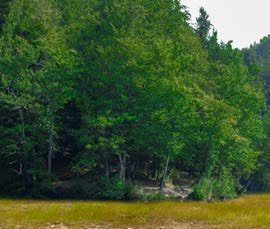
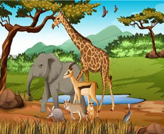
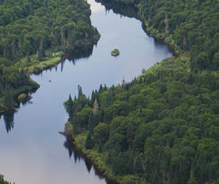
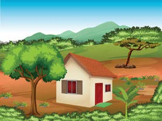
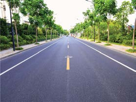

![This is a flow diagram with five labelled boxes connected by arrows. On the left is a box labelled Environment. Its line moves right and divides into two arrows. The upper arrow points to Natural environment, and an arrow from Natural environment points right to Natural things. The lower arrow points to Man-made environment, and an arrow from Man-made environment points right to Man-made things. The diagram shows that the Environment is divided into Natural environment and Man-made environment, and each contains its corresponding things.](images/pg009_fig002.png)
Natural and man-made things can be found at home, school or elsewhere. Human beings depend on the environment for various activities that enhance their living. Thus, human beings are responsible for taking care of and conserving the environment. Figure 3 shows some of the things found in the environment.





